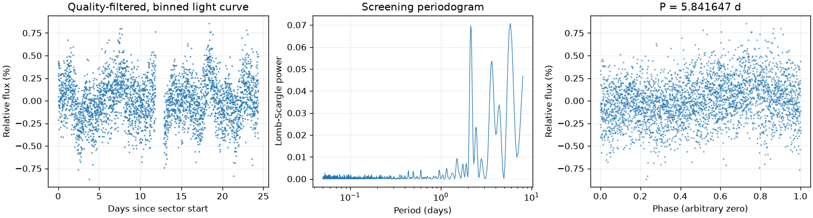
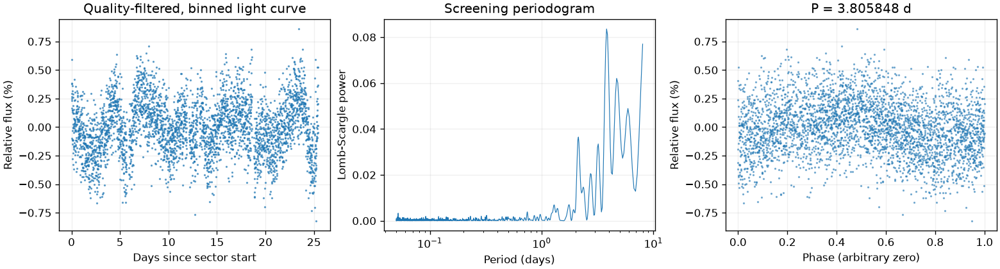
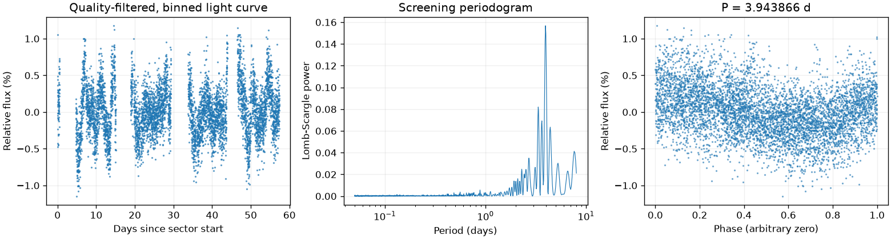

Sector 27 · LS 5.841647 天
BLS 辅助周期：4.323582 天
两种搜索周期不同，尚未自动决定采用哪一个。
前半段 LS：6.383277 天；后半段 LS：4.086116 天。
相对幅度估计 0.2273% · 有效点数 16778

Screening peak only; no correlated-noise false-alarm calibration or physical classification.
这是筛选报告，未确认新发现，也不能代替 VSX 提交材料。
图中依次为亮度随时间变化、候选周期强度和折叠后的重复形状。相位零点仅供展示；纵轴是相对通量，不是标定星等。
BLS 辅助周期：4.323582 天
两种搜索周期不同，尚未自动决定采用哪一个。
前半段 LS：6.383277 天；后半段 LS：4.086116 天。
相对幅度估计 0.2273% · 有效点数 16778

Screening peak only; no correlated-noise false-alarm calibration or physical classification.
BLS 辅助周期：6.636604 天
两种搜索周期不同，尚未自动决定采用哪一个。
前半段 LS：3.805465 天；后半段 LS：6.083757 天。
相对幅度估计 0.2353% · 有效点数 17435

Screening peak only; no correlated-noise false-alarm calibration or physical classification.
BLS 辅助周期：7.744225 天
两种搜索周期不同，尚未自动决定采用哪一个。
前半段 LS：3.977881 天；后半段 LS：4.120619 天。
相对幅度估计 0.3874% · 有效点数 28987

Screening peak only; no correlated-noise false-alarm calibration or physical classification.
{
"ra_deg": 80.6455138161839,
"dec_deg": -67.9620129982075,
"catalog_queries": [
{
"source": "VSX",
"checked_at": "2026-11-10T08:49:09.189901+00:00",
"url": "https://vsx.aavso.org/index.php",
"query": {
"params": {
"view": "api.list",
"ra": 80.6455138161839,
"dec": -67.9620129982075,
"radius": 0.04,
"format": "json"
}
},
"status": "completed",
"match_count": 22,
"note": "VSX neighborhood only; no-match is not novelty confirmation."
},
{
"source": "SIMBAD/VizieR/ADS",
"status": "not_run",
"note": "Requires detailed catalog/literature review; VSX alone is insufficient."
}
],
"vsx_neighbors": [
{
"Name": "Gaia DR3 4658740859811785088",
"RA2000": "80.56449",
"Declination2000": "-67.98356",
"ProperMotionRA": "1.6470",
"ProperMotionDec": "0.3290",
"VariabilityType": "E",
"Period": "1.26637",
"MaxMag": "15.27 G",
"MinMag": "15.40 G",
"SpectralType": "O",
"Discoverer": "Gaia collaboration",
"Category": "Variable",
"OID": "4248263",
"Constellation": "Dor",
"sep_arcsec": 134.10603036516355
},
{
"Name": "Gaia DR3 4658741478287053184",
"RA2000": "80.57044",
"Declination2000": "-67.94426",
"ProperMotionRA": "1.6180",
"ProperMotionDec": "0.0630",
"VariabilityType": "E",
"Period": "1.79705",
"EclipseDuration": "13.0",
"MaxMag": "14.46 G",
"MinMag": "14.61 G",
"SpectralType": "B",
"Discoverer": "Gaia collaboration",
"Category": "Variable",
"OID": "4248417",
"Constellation": "Dor",
"sep_arcsec": 119.90135457620022
},
{
"Name": "Gaia DR3 4658741267872443520",
"RA2000": "80.57065",
"Declination2000": "-67.96885",
"ProperMotionRA": "1.3210",
"ProperMotionDec": "1.2180",
"VariabilityType": "E",
"Period": "0.80745",
"MaxMag": "18.74 G",
"MinMag": "18.98 G",
"Discoverer": "Gaia collaboration",
"Category": "Variable",
"OID": "4248424",
"Constellation": "Dor",
"sep_arcsec": 104.06352211001688
},
{
"Name": "Gaia DR3 4658740855493530624",
"RA2000": "80.57073",
"Declination2000": "-67.98937",
"ProperMotionRA": "1.6910",
"ProperMotionDec": "0.1320",
"VariabilityType": "L",
"MaxMag": "18.87 G",
"MinMag": "19.10 G",
"Discoverer": "Gaia collaboration",
"Category": "Variable",
"OID": "4248425",
"Constellation": "Dor",
"sep_arcsec": 141.03856037881002
},
{
"Name": "Gaia DR3 4658741375187880832",
"RA2000": "80.57119",
"Declination2000": "-67.95069",
"ProperMotionRA": "2.1560",
"ProperMotionDec": "0.1900",
"VariabilityType": "E",
"Period": "0.78031",
"EclipseDuration": "11.0",
"MaxMag": "16.83 G",
"MinMag": "16.97 G",
"SpectralType": "O",
"Discoverer": "Gaia collaboration",
"Category": "Variable",
"OID": "4248435",
"Constellation": "Dor",
"sep_arcsec": 108.3787391484652
},
{
"Name": "Gaia DR3 4658741370886084992",
"RA2000": "80.57186",
"Declination2000": "-67.94916",
"ProperMotionRA": "1.8460",
"ProperMotionDec": "0.2360",
"VariabilityType": "DSCT|GDOR|SXPHE",
"Period": "0.0748268",
"MaxMag": "11.99 G",
"MinMag": "12.05 G",
"SpectralType": "B",
"Discoverer": "Gaia collaboration",
"Category": "Variable",
"OID": "4248455",
"Constellation": "Dor",
"sep_arcsec": 109.74967753604243
},
{
"Name": "Gaia DR3 4658741409567577344",
"RA2000": "80.57802",
"Declination2000": "-67.93922",
"ProperMotionRA": "1.6390",
"ProperMotionDec": "0.2850",
"VariabilityType": "BE|GCAS|SDOR|WR",
"MaxMag": "15.04 G",
"MinMag": "15.14 G",
"SpectralType": "O",
"Discoverer": "Gaia collaboration",
"Category": "Variable",
"OID": "4248554",
"Constellation": "Dor",
"sep_arcsec": 122.69148094426977
},
{
"Name": "Gaia DR3 4658741306468429824",
"RA2000": "80.58124",
"Declination2000": "-67.95923",
"ProperMotionRA": "1.8360",
"ProperMotionDec": "0.2900",
"VariabilityType": "E",
"Period": "0.83438",
"MaxMag": "17.65 G",
"MinMag": "18.10 G",
"Discoverer": "Gaia collaboration",
"Category": "Variable",
"OID": "4248615",
"Constellation": "Dor",
"sep_arcsec": 87.40216588511547
},
{
"Name": "Gaia DR3 4658741306488376960",
"RA2000": "80.58526",
"Declination2000": "-67.95650",
"ProperMotionRA": "1.4800",
"ProperMotionDec": "2.4180",
"VariabilityType": "E",
"Period": "0.66976",
"MaxMag": "17.70 G",
"MinMag": "17.81 G",
"Discoverer": "Gaia collaboration",
"Category": "Variable",
"OID": "4248696",
"Constellation": "Dor",
"sep_arcsec": 83.78487690996349
},
{
"Name": "Gaia DR3 4658741443927317376",
"RA2000": "80.58992",
"Declination2000": "-67.93148",
"ProperMotionRA": "1.7700",
"ProperMotionDec": "0.2640",
"VariabilityType": "E",
"Period": "7.1974",
"MaxMag": "13.90 G",
"MinMag": "14.24 G",
"SpectralType": "B",
"Discoverer": "Gaia collaboration",
"Category": "Variable",
"OID": "4248792",
"Constellation": "Dor",
"sep_arcsec": 133.15015149342216
},
{
"Name": "Gaia DR3 4658741409567591936",
"RA2000": "80.59544",
"Declination2000": "-67.94703",
"ProperMotionRA": "1.8720",
"ProperMotionDec": "0.3340",
"VariabilityType": "L",
"MaxMag": "15.99 G",
"MinMag": "16.17 G",
"SpectralType": "M",
"Discoverer": "Gaia collaboration",
"Category": "Variable",
"OID": "4248900",
"Constellation": "Dor",
"sep_arcsec": 86.53008148689305
},
{
"Name": "Gaia DR3 4658741443927323264",
"RA2000": "80.60062",
"Declination2000": "-67.93038",
"ProperMotionRA": "1.6880",
"ProperMotionDec": "0.3330",
"VariabilityType": "SR|M",
"Period": "165.9",
"MaxMag": "14.94 G",
"MinMag": "16.30 G",
"SpectralType": "M",
"Discoverer": "Gaia collaboration",
"Category": "Variable",
"OID": "4248993",
"Constellation": "Dor",
"sep_arcsec": 129.0383520999455
},
{
"Name": "Gaia DR3 4658741405264542848",
"RA2000": "80.61422",
"Declination2000": "-67.95260",
"ProperMotionRA": "1.1080",
"ProperMotionDec": "0.6640",
"VariabilityType": "RRC",
"Period": "0.269248",
"MaxMag": "19.57 G",
"MinMag": "19.93 G",
"Discoverer": "Gaia collaboration",
"Category": "Variable",
"OID": "8737409",
"Constellation": "Dor",
"sep_arcsec": 54.184186055704046
},
{
"Name": "Gaia DR3 4658741443927335424",
"RA2000": "80.61813",
"Declination2000": "-67.93627",
"ProperMotionRA": "1.8280",
"ProperMotionDec": "0.3320",
"VariabilityType": "BE|GCAS|SDOR|WR",
"MaxMag": "16.02 G",
"MinMag": "16.18 G",
"SpectralType": "O",
"Discoverer": "Gaia collaboration",
"Category": "Variable",
"OID": "4249320",
"Constellation": "Dor",
"sep_arcsec": 99.79174897005906
},
{
"Name": "Gaia DR3 4658738450373857024",
"RA2000": "80.62244",
"Declination2000": "-67.94822",
"ProperMotionRA": "1.6540",
"ProperMotionDec": "0.1650",
"VariabilityType": "E",
"Period": "0.9196",
"MaxMag": "16.95 G",
"MinMag": "17.09 G",
"SpectralType": "O",
"Discoverer": "Gaia collaboration",
"Category": "Variable",
"OID": "4249402",
"Constellation": "Dor",
"sep_arcsec": 58.63123930684053
},
{
"Name": "Gaia DR3 4658738450374014208",
"RA2000": "80.63395",
"Declination2000": "-67.96174",
"ProperMotionRA": "2.0590",
"ProperMotionDec": "0.9990",
"VariabilityType": "RRAB",
"Period": "0.65863",
"MaxMag": "20.00 G",
"MinMag": "20.43 G",
"Discoverer": "Gaia collaboration",
"Category": "Variable",
"OID": "8737442",
"Constellation": "Dor",
"sep_arcsec": 15.651340319599006
},
{
"Name": "Gaia DR3 4658740000798394880",
"RA2000": "80.64323",
"Declination2000": "-67.92447",
"ProperMotionRA": "1.8340",
"ProperMotionDec": "0.1900",
"VariabilityType": "E",
"Period": "2.02643",
"EclipseDuration": "12.0",
"MaxMag": "17.19 G",
"MinMag": "17.34 G",
"SpectralType": "B",
"Discoverer": "Gaia collaboration",
"Category": "Variable",
"OID": "4249843",
"Constellation": "Dor",
"sep_arcsec": 135.19005387703908
},
{
"Name": "Gaia DR3 4658738282831437184",
"RA2000": "80.66871",
"Declination2000": "-67.98405",
"VariabilityType": "S",
"MaxMag": "17.57 G",
"MinMag": "18.22 G",
"Discoverer": "Gaia collaboration",
"Category": "Variable",
"OID": "8322358",
"Constellation": "Dor",
"sep_arcsec": 85.29127649495766
},
{
"Name": "ASASSN-V J052243.68-675625.7",
"RA2000": "80.68197",
"Declination2000": "-67.94047",
"VariabilityType": "SR:",
"Period": "280",
"Epoch": "2458923.567",
"MaxMag": "15.28 g",
"MinMag": "(0.40) g",
"Category": "Variable",
"OID": "2239239",
"Constellation": "Dor",
"sep_arcsec": 91.88066636834552
},
{
"Name": "Gaia DR3 4658738415967478400",
"RA2000": "80.68696",
"Declination2000": "-67.95718",
"ProperMotionRA": "1.1470",
"ProperMotionDec": "0.4740",
"VariabilityType": "E",
"Period": "15.805",
"EclipseDuration": "5.0",
"MaxMag": "19.67 G",
"MinMag": "20.07 G",
"Discoverer": "Gaia collaboration",
"Category": "Variable",
"OID": "8737551",
"Constellation": "Dor",
"sep_arcsec": 58.63216926738008
},
{
"Name": "Gaia DR3 4658739897739140736",
"RA2000": "80.70832",
"Declination2000": "-67.95218",
"ProperMotionRA": "1.6020",
"ProperMotionDec": "0.4220",
"VariabilityType": "E",
"Period": "2.1381",
"MaxMag": "17.00 G",
"MinMag": "17.36 G",
"SpectralType": "F",
"Discoverer": "Gaia collaboration",
"Category": "Variable",
"OID": "4251155",
"Constellation": "Dor",
"sep_arcsec": 91.94386478900712
},
{
"Name": "Gaia DR3 4658739691580887936",
"RA2000": "80.72114",
"Declination2000": "-67.96133",
"ProperMotionRA": "1.6010",
"ProperMotionDec": "1.0000",
"VariabilityType": "DSCT|GDOR|SXPHE",
"MaxMag": "20.24 G",
"MinMag": "20.53 G",
"Discoverer": "Gaia collaboration",
"Category": "Variable",
"OID": "8737607",
"Constellation": "Dor",
"sep_arcsec": 102.18666312107462
}
],
"notes": [],
"errors": [],
"repeatability": {
"status": "inconsistent",
"fractional_spread": 0.5161936279548541,
"tolerance": 0.05,
"note": "Heuristic screening comparison, not period-error or long-term phase-coherence validation."
},
"localization": null,
"submission": {
"name": null,
"ra_deg": null,
"dec_deg": null,
"coordinate_source": null,
"coordinate_epoch": null,
"variability_type": null,
"period_days": null,
"period_error_days": null,
"epoch": null,
"epoch_time_standard": null,
"epoch_event": null,
"max_magnitude": null,
"min_magnitude": null,
"passband": null,
"magnitude_source": null,
"mean_magnitude": null,
"amplitude_magnitude": null,
"amplitude_passband": null,
"discoverers": null,
"references": null
}
}